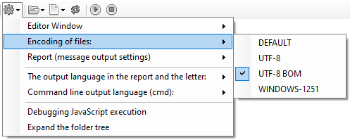
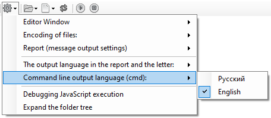
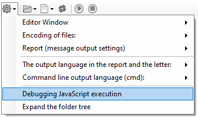
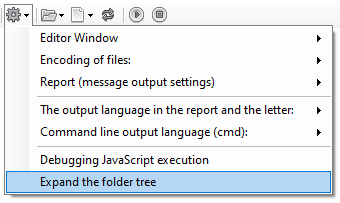
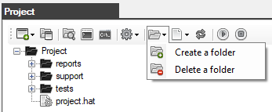

The Project window - is the Explorer tab
The main window for working with the project.

The toolbar contains the following buttons:

- Create a project - creates a new autotest project (simple or compatible with Visual Studio)
- Open a project - opens a previously created autotest project
- Explorer - opens the project folder in Windows Explorer
- Form a startup command - opens a window with an already formed autotest startup command for the Windows command prompt (cmd)
- Command Prompt (cmd) - opens the Windows system console
- Settings - the settings menu for working with the project
- Folders - menu for working with folders
- Files - menu for working with files
- Update - updating information in the folder and file tree
- Run the test - runs the selected autotest
- Stop the test - stops the running autotest
Settings Menu
- Choosing the way to display the editor window

- Choosing the encoding for the project files

- Configuring the output of messages in the report, as well as generating a report with all the results of the checks.

- Selecting the output language in the report and letter

- Selecting the output language on the command line (cmd)

- Enabling debugging when executing JavaScript code

- Expand the folder and file tree in Explorer

The folder menu allows you to create and delete folders

The file menu allows you to create new autotest files, open and delete existing files

The tree of project folders and files

Created with the Personal Edition of HelpNDoc: Create iPhone web-based documentation